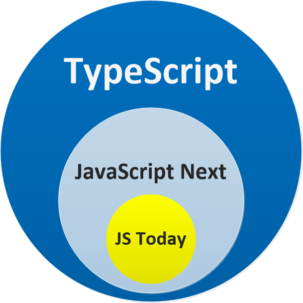

What is TypeScript?
TypeScript is an open-source programming language developed and maintained by Microsoft.
TypeScript offers us more control over our code via type annotations, interfaces, and classes.
Typescript comes with some additional features:
- Strong-typed variables
- Object-oriented programming
Installing TypeScript
There are two main ways to get the TypeScript tools:
- via npm (the Node.js package manager)
>npm install -g typescript
>tsc -vTypescript files have a .ts extension.
Browsers don’t understand Typescript code, so later it needs to get translated to Javascript.
tsc yourFileName.tsStrong Typing
let name: string; // for strings
let age: number; // for any kind of numbers
let isChecked: boolean; // true or false
let data: any; // can be changed later to any type
let array: number[]; // array of numbersClass
class Feline {
catchMice(numberOfMice: number) {
console.log(`This fierce feline caught ${numberOfMice} mice.`);
}
}
class Tiger extends Feline {
rawr() {
console.log('RAWRRR!');
}
}
const tiger = new Tiger();
tiger.rawr();
tiger.catchMice(10);Constructor
class Student {
firstName: String;
lastName: String;
constructor(firstName?: string, lastName?: string) {
this.firstName = firstName;
this.lastName = lastName;
}
getGrades() {
// some code
}
}Access Modifiers
There are 3 types of access modifiers:
- public — allows access from outside of a class
- private — foesn’t allow access from outside of a class
- protected — allows access only within a class and its derived classes
class Student {
private firstName: String;
private lastName: String;
constructor(firstName?: string, lastName?: string) {
this.firstName = firstName;
this.lastName = lastName;
}
getGrades() {
// some code
}
}What else can TypeScript do?
- In addition to displaying the errors at compile time, certain IDEs such as Visual Studio Code will present the errors to the developer while they are typing the code. This makes correcting simple careless errors much quicker and easier.
- TypeScript can also infer types that aren’t explicitly declared by the developer, such as inferring the return value type of a function. If the function is adding two parameters that were declared as both number , TypeScript will infer the return value must be of type number.
TypeScript Pros

- rich IDE support with autocomplete and code navigation features;
- safe automatic refactorings;
- discoverable APIs and more self-explanatory code contracts (through type declarations);
- typos caught at compilation time;
- class-based OO, with inheritance, private members and interfaces;
- module support;
- existing JavaScript code interoperability:
- Compiles down to idiomatic JavaScript;
- Any JavaScript code is a valid TypeScript code;
TypeScript Cons
- in order to get the most out of the TypeScript, developers will need to use the type annotations everywhere in their code, which might at times be cumbersome (or perceived as such coming from a dynamic language background);
- not all third-party libraries have ambient definitions available. The development team will have to write and maintain their own if they want to use a particular library and take advantage of TypeScript;
- in order to run the application in the browser, a compile step is required to transform TypeScript into JavaScript;